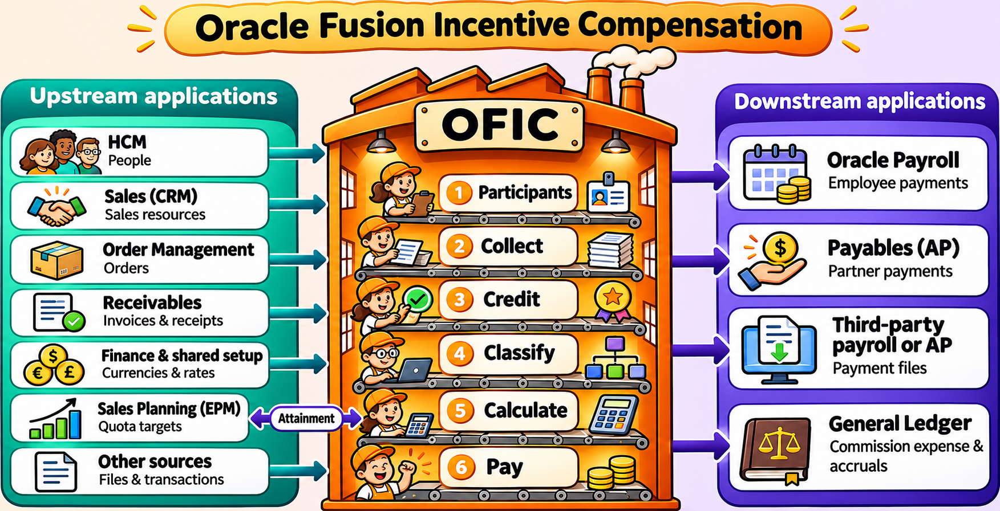
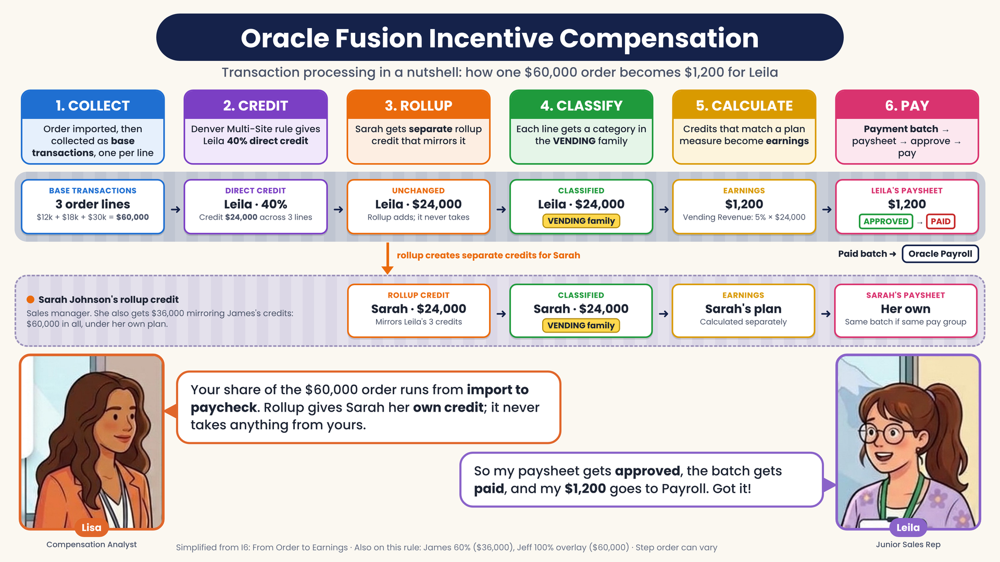

Incentive Compensation — The Big Picture
Before following one deal through the commission engine in Chapter 3, it helps to see the whole factory at once: what goes in, the steps it passes through, and where the money comes out. This page is that view — one picture, the vocabulary that goes with it, and three misconceptions worth clearing up early.
The Factory
Upstream In, Earnings Out

📱 On mobile? Pinch to zoom to read the details clearly.
The Steps, in Plain Words
| Step | What happens | James's example |
|---|---|---|
| Participants | Setup, not processing. A person must exist as a participant, with a role, a compensation plan and a pay group, before anything can be credited to them. Participants are imported from HCM or Sales resources, not created from scratch. | James is set up as a Senior Sales Rep |
| Collect | Transactions are imported into a staging area, then collected into OFIC. This is where an order or invoice from another system becomes something the engine can work on. | The $78,500 XYZ deal arrives |
| Credit | Crediting rules decide who gets credit for the transaction, and how much: the closing rep, overlay specialists, or a split between co-sellers. | James 100%, Sarah overlay |
| Rollup | Direct credit is copied up the management hierarchy, so a manager is credited for their team's sales without taking anything away from the rep. | James's manager is credited too |
| Classify | Classification rules read the transaction's attributes and put it in a credit category, so it counts toward the right performance measure. | Counts as "Revenue Booked — Vending" |
| Calculate | The incentive formula and rate table turn credited, classified amounts into earnings, using attainment against quota to pick the rate. | $4,495 commission |
| Pay | Earnings are gathered into a payment batch, with holds, draws and recoveries applied, and sent to the system that pays. | Sent to Payroll |
Transaction Processing in a Nutshell
Lisa Walks Leila Through Her $1,200

📱 On mobile? Pinch to zoom to read the details clearly.
The Loading Docks
| Application | Direction | What crosses the dock |
|---|---|---|
| HCM / Sales resources | In | The people who earn, and their managers (needed for rollup). |
| Order Management, Receivables, other sources | In | Business transactions: booked orders, invoices, receipts, or anything else the plan pays on. Typical sources, brought in through import rather than an automatic feed. |
| Finance & shared setup | In | Currencies and conversion rates, so a deal in one currency can pay a rep in another. |
| Sales Planning (EPM) | Both ways | Quota targets come in as participant goals; performance measures and participants go out, so planners can compare quota with attainment. File-based, with separate security in each application. |
| Oracle Payroll | Out | Paid payment batches for employees, sent with the Send Payment to Payroll process. |
| Payables or third-party payroll | Out | Payments for non-employees (partners, external channel reps), or payment files for a payroll system outside Oracle. |
| General Ledger | Out, indirectly | Commission expense reaches the ledger through the payroll or payables accounting. How accruals are booked before payment is an implementation design decision. |
Three Things Beginners Get Wrong
2. "Upstream" doesn't mean "automatically connected." In Fusion, transactions are imported into a staging table and then collected. Order Management and Receivables are the usual sources, but getting their data in is an integration someone designs and runs.
3. An earning is not a payment. Calculation produces an earning the moment it runs; the payment step decides what actually leaves the building, and when. Holds, draws and clawbacks all live in that gap — which is why Chapter 3 and the advanced chapters spend so much time on it.
Where to Go Next
Sources: Oracle documentation — Overview of Incentive Compensation Transaction Processing, Importing and Collecting Source Transactions, Participant Goals and Oracle Sales Planning Cloud, Configurable Payment Extract for Payroll Integration. Illustrative representation — not an actual product screenshot.